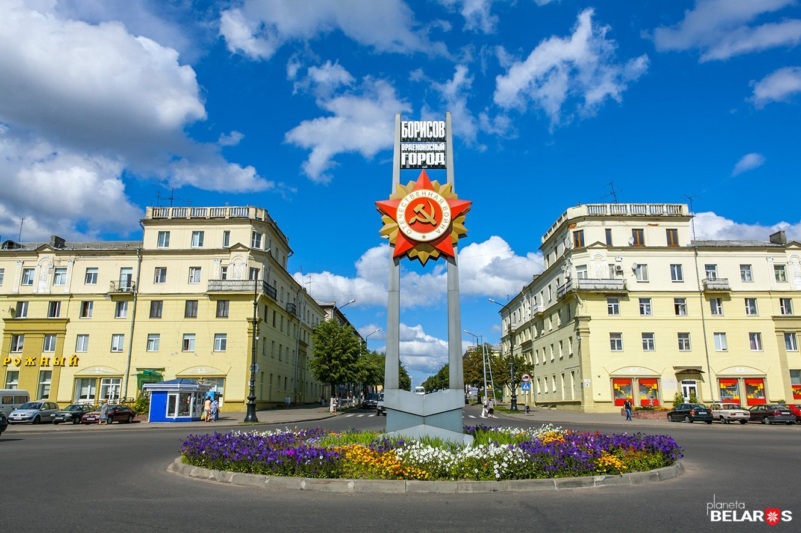
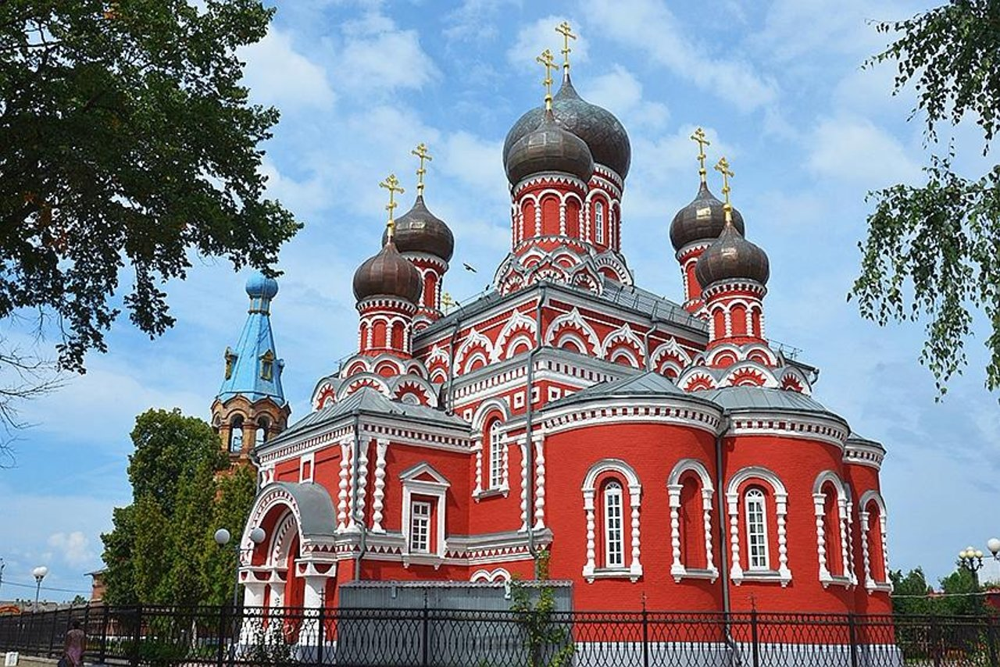
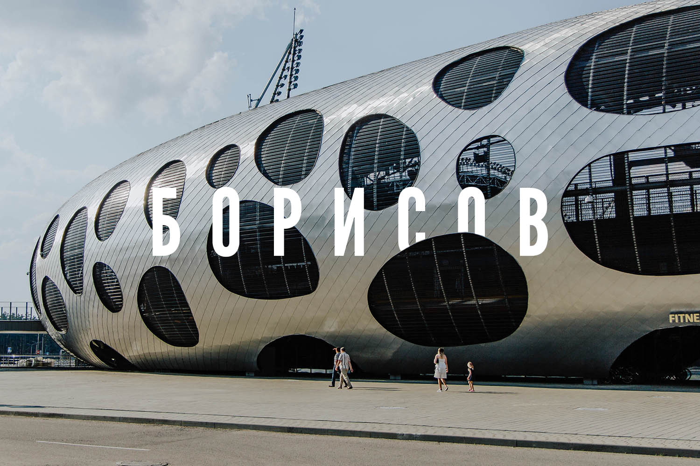

Путеводитель по Борисову
Добро пожаловать в Борисов — город, где оживает история! Борисов — это удивительный край на берегах Березины, соединяющий великое прошлое и современный уют. Наш сайт-путеводитель поможет вам спланировать идеальный маршрут. Вы откроете для себя главные сокровища Борисова и его окрестностей. Что вас ждет в Борисове? Березина: легендарная река, изменившая ход европейской истории. Батареи: артиллерийские укрепления 1812 года, помнящие войну с Наполеоном. Шуховская башня: уникальное инженерное чудо архитектуры. Борисов-Арена: суперсовременный стадион и сердце белорусского футбола. Воскресенский собор: величественный православный храм из красного кирпича. Выберите свой формат путешествия Исторический маршрут: пройдите по следам событий 1812 года и Первой мировой войны. Выходные с семьей: лучшие парки, кафе и зоны отдыха для детей и взрослых. Активный туризм: сплавы по Березине, велопрогулки и экотропы. Промышленный туризм: экскурсии на знаменитые заводы Борисова. Почему стоит приехать сюда? Борисов находится всего в часе езды от Минска, но предлагает совершенно уникальную атмосферу. Здесь можно прикоснуться к тайнам истории, насладиться живописной природой и отдохнуть от суеты мегаполиса. Начните своё путешествие прямо сейчас!


